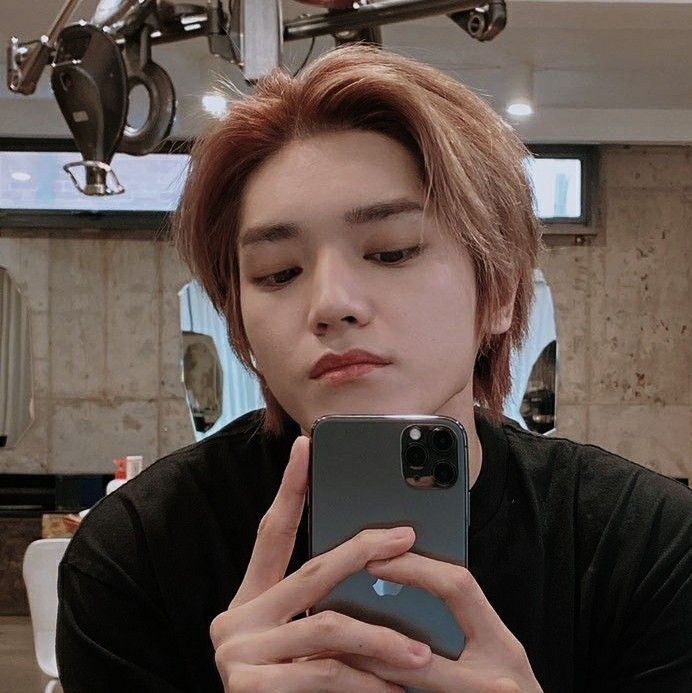

Leader

- Nama lahir: Lee Tae Yong
- Tempat lahir: Seoul, Korea Selatan
- Tanggal lahir: 1 Juli 1995
- Tinggi badan: 175 cm
- Golongan darah: O
- Instagram : @taeoxo_nct
Maknae
- Nama lahir: Park Ji Sung
- Tempat lahir: Seoul, Korea Selatan
- Tanggal lahir: 5 Februari 2002
- Tinggi badan: 180 cm
- Golongan darah: O
- Posisi: Main Dancer, Sub Vocalist, Sub Rapper, Maknae
New 1st Member
- Nama Lengkap: Osaki Shotaro
- Tempat, Tanggal Lahir: Prefektur Kanagawa, Jepang, 25 November 2000
- Zodiak: Sagitarius
- Tinggi: 178 cm
- Instagram : @shotaroo
New 2nd Member
- Nama : Jung Sung Chan
- Tempat dan Tanggal Lahir : Seoul, 13 September 2001
- Zodiak: Sagitarius
- Zodiak : Virgo
- Tinggi Badan : 185 cm